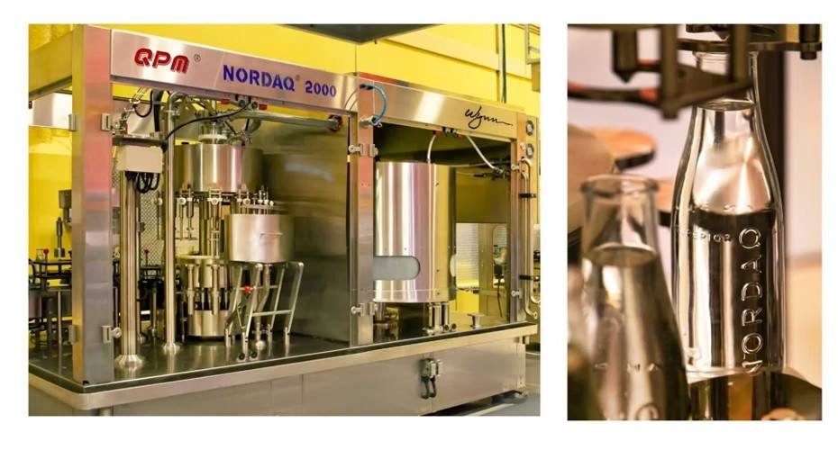
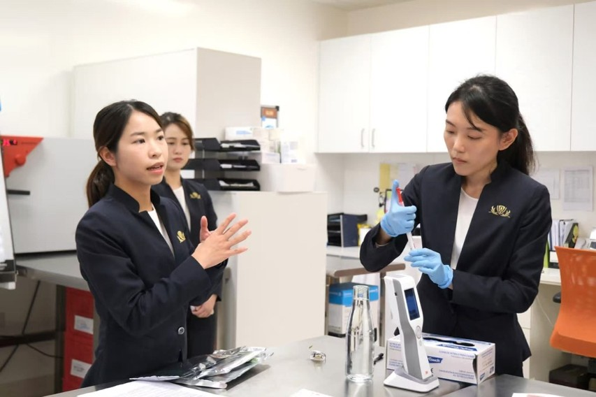
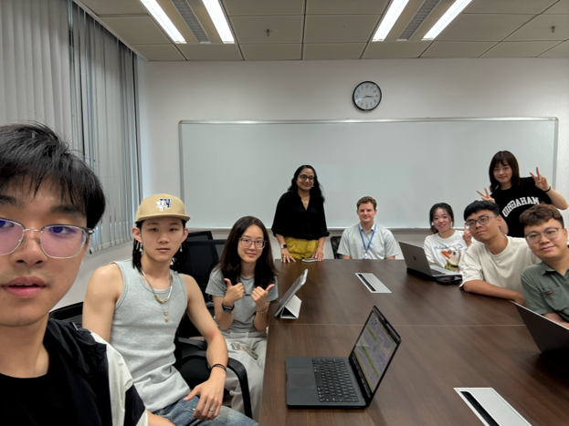
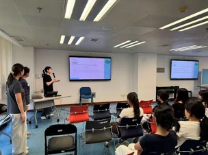
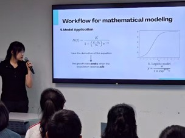
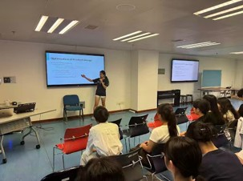
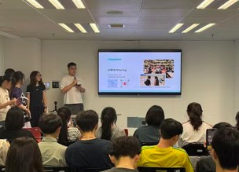

Dialogue with the Frontline
Visit the Wynn Palace Food Safety Department
Our team wants to explore authentic food safety testing to bridge the gap between synthetic biology research and real-world food safety practice. We aimed to understand the operational challenges, current testing workflows, and unmet needs of frontline professionals—especially regarding L. monocytogenes detection. This direct engagement was critical to ensuring our project is not only scientifically sound but also practically relevant and user-centered.
With this anticipation, we visited Food Safety Department of Wynn Palace Integrated Resort. We toured three core facilities:
Nordaq Water Bottling Plant – We witnessed how a fully automated purified water bottling workshop minimizes human contact and the risk of microbial contamination to the greatest extent. We were also impressed by its efficiency in producing 2,000 bottles of Nordaq purified water per hour and its sustainable practice in reducing approximately 8 million plastic bottles annually.
Sustainability Food Safety Laboratory – They demonstrated their daily pathogen surveillance using 3M culture‑based kits and ATP bioluminescence for rapid hygiene checks, whose user-friendly design sparked immediate inspiration for our own detection device.
Gourmet Pavilion – We have observed how mature enterprises implement HACCP principles through on-site sampling, routine disinfection, cross-department supervision and collaboration in daily restaurant operations.


Through direct discussions with frontline food safety inspectors, we gained a deep understanding of their demands:
- For food testing whether done internally or by a third party, takes 7–14 days, significantly delaying intervention and contamination source tracing.
- Accuracy and specificity rank above speed when evaluating new technologies.
- A conveniently usable testing device is what they are expecting.
These reinforce the need for a rapid, specific, and field-deployable detection method, which is precisely our project goal.
This visit also highlighted our project's alignment with the SDGs. Early contamination detection supports SDG 2 (Zero Hunger) by reducing food waste, preventing mass disposal and keeping more food in the supply chain. Wynn's end‑to‑end controls demonstrate how food safety directly cuts food loss. This visit also covered SDG 3 (Good Health & Well‑Being), because Wynn's rigorous pathogen and staff hygiene monitoring reflects our commitment to prevent foodborne illness outbreaks and protects public health. Moreover, the Nordaq plant's on‑site purification and bottling system relates to SDG 6 (Clean Water & Sanitation), as it guarantees safe drinking water through strict hygiene controls. Finally, we have seen the specific manifestations of the SDG 12 (Responsible Consumption & Production) — Wynn's recycling of glass bottles and metal caps models sustainable hospitality production, while their comprehensive food oversight reduces waste and safeguards consumer rights.
This visit bridged laboratory research with real-world practice. Observing Wynn's end-to-end system — from sourcing to restaurant operations, gave us a holistic view of food safety management. We identified a critical pain point: current testing takes 7 to 14 days, delaying intervention and source tracing—precisely the gap our rapid, field-deployable Listeria detection aims to fill.
Beyond technology, engaging with frontline professionals deepened our appreciation for the rigorous standards, attention to detail, and sense of responsibility that define daily operations. Food safety depends not only on tools but also on human discipline and organizational culture. This experience reaffirmed our mission: to deliver a solution that meets real inspector needs and makes a tangible difference in food safety for everyone.
Sponsor Meeting with BioMyne
We fully understand the importance of sponsors to our project. We urgently need to have face-to-face talks with them to secure the necessary support to get the project running, like financial and technical sponsorship. At the same time, we can gain industry insights and professional guidance, and ultimately boost the project's impact.
So we had a meeting with BioMyne — the sponsor that has supported us for many years. This meeting provided critical industry perspective that directly shaped our project:

Dr. Deepa Alex Mora
A biotechnology entrepreneur and Founder & Director of BioMyne Biotechnology Innovation & Engineering Ltd. in Macau. (The fourth from the left)
- Feasibility validation: Sponsor's questions on sensitivity and specificity pushed us to prioritize rigorous experimental controls which is essential for any real-world food safety tool.
- Biosafety & regulation: Their concerns about genetically modified organisms (GMO) compliance reminded us to redesign the delivery system to confirm that the plasmids being used comply with biosafety regulations.
- Accessible detection: They told us different GFPs vary in brightness and some are detectable by phone camera. And suggested we better investigate brighter variants. This has made us consider purchasing brighter fluorescent protein variants to enhance signal intensity and address the issue of weak signals at low concentrations, aligning our work with low-cost, field-deployable testing — a key goal of our IHP outreach.
- Behavioral impact: They endorsed our "hands-on" experiment education design, confirming that IHP should drive not just "knowledge dissemination" but actual behavior changes in food safety practices.
- Future Inspiring: They also suggested that computer vision models could assist with fluorescence signal recognition, which inspired us to explore integrating AI into our project as a long-term enhancement.
Engaging with BioMyne transformed our approach from a lab-centric project to one grounded in industrial reality. Their feedback directly influenced our validation strategy, biosafety considerations, and even future technology roadmap. This meeting confirmed that our solution must be practical, safe, and scalable — a core lesson of human-centered design in synthetic biology. We look forward to achieving success together in this collaboration.
The 12th Macau Symposium on Biomedical Sciences
We deeply understand the meaning of communication and listening. In the early stages of project development, we sought a platform to be seen, while also looking forward to voices from different professional fields to improve our designs.
We participated in the 12th Macau Symposium on Biomedical Sciences, and with a team-designed poster, we proactively introduced our Listeria detection project to professors and students, and were honored to receive the Best Poster Award.
Yet the real value lay in the conversations. Engaging with experts and peers gave us concrete, actionable feedback that directly shaped our project:
- Some experts specifically asked about sensitivity, which prompted us to refer to the PoreGlow prototype and organize detailed data on detection limits during subsequent experiments.
- Several attendees were concerned whether other substances or contaminants in the external environment might damage the liposomes, causing false positives; we responded that the liposome design relies on the unique pore-forming activity of LLO, alleviating concerns about specificity.
- Other professors suggested alternative carriers (such as apoptotic bodies), and we explained the issues of size and heterogeneity, while acknowledging that exosome yield is a bottleneck, which reminded us to explore more production-boosting approaches.


Academic dialogue facilitates project optimization. It's easy to fall into an "insider perspective" in the lab, and external questions help us uncover issues we hadn't noticed ourselves. Expert feedback is also more conducive to refining experimental details. We also realized that true IHP is not just about presenting — it's about listening. What grounded us more than an award was returning to the lab with pages of notes, knowing exactly where to go next. Also we gained a deeper appreciation for the power of scientific community engagement. This first outreach reminded us that scientific research is never isolated exploration — it needs to be questioned, challenged, and examined from diverse perspectives. We are grateful to everyone who stopped to talk with us, you brought our project one step closer to being truly useful.
Cross-Border Clinical Perspectives with Portuguese Biomedical Students
As part of our outreach efforts, we sought to engage with early-career health science peers to test the real-world relevance and translational potential of our Listeria detection project. Our goal was not only to present our synthetic biology approach but also to step outside the laboratory bubble and explore unknown directions. We also hoped to foster genuine cross-cultural dialogue, believing that science flourishes best when it bridges disciplines, career stages, and nationalities. To our surprise, this meeting allowed us to gain an entirely new clinical perspective.
We met with four final-year Biomedical students from Portugal, who are about to enter clinical or diagnostic careers and introduced our project to them. During the presentation, they showed particular curiosity about two aspects:

- Listeria's ability to survive at refrigeration temperatures, which makes it a persistent food safety threat.
- The blue-light‑induced complementation of sfGFP fragments, a novel detection strategy they found elegant and specific.
These two focal points are very representative, which are precisely the targets and innovations of our project. They appreciated that our method could be faster and more specific than conventional culture‑based tests, and they emphasized the high-risk Listeria poses to immunocompromised, elderly, and pregnant individuals. However, they admitted it was difficult for them to suggest technical improvements, as their training focuses more on diagnosing and treating infections than on engineering detection tools. Notably, they proposed an unexpected direction: clinical diagnostics. They pointed out that our platform, if adapted to blood samples with suitable antibodies, could rapidly identify bacterial pathogens in patients and help doctors choose targeted treatment much sooner. This was a completely new angle we had not considered.

Beyond the scientific discussion, we shared a warm dinner together. We talked about campus life in China and Portugal, compared academic cultures, and joked about our different food habits. It was a genuine cultural exchange that made the evening far more memorable than a typical project promotion.
From food safety to clinical care, this meeting enriched our project in ways we did not anticipate. We are now actively evaluating it as a potential secondary application. Their questions also pushed us to clarify our user definition, technology readiness, and presentation strategy for the judging panel. This event was also a reminder that iGEM is not just about building genetic circuits — it is about building bridges between people, disciplines, and worlds. Even though we have many differences, what we share is our sincerity and passion for science. This intercultural experience left us more open‑minded, more globally aware, and more inspired to design science that truly serves diverse communities.
Public Engagement & Co-creation
Health Sciences Summer Camp 2026
We believe that high school students about to enter college possess remarkable learning agility, curiosity, and creative problem-solving skills, and they are the stems from the immense potential of this audience to become the next generation of scientific innovators. However, most students have limited understanding on synthetic biology and genetic engineering. By spreading synthetic biology to peers, promoting our projects, and raising awareness of food safety, we are committed to building a bridge to co-creation and laying the foundation for the future.
With this mission, we engaged approximately 80 high school students from across Macao through the Health Sciences Summer Camp hosted by our faculty. While we delivered structured presentations on synthetic biology, L. monocytogenes pathogenesis, and our detection kit framework, the most valuable IHP moments emerged during the extended Q&A sessions, where students and Prof. Terence Poon alike pressed us on practical questions that went far beyond textbook biology.
Commercial Viability and Product Design: Students asked about the actual appearance, contents, and target customers of our portable product, prompting us to explain our vision of a 3D-printed device with pH-controlled buffer and lyophilized liposome/exosome sensors, while candidly acknowledging our current experimental stage and committing to accelerated market analysis.
Cost Comparison and Market Positioning: When questioned about costs compared to existing methods, we presented a side-by-side comparison showing in-house PCR at $5–$10 per sample, commercial PCR kits at $40 per test, and culture methods ranging from $0.20 for media powder to $10.00 for commercial pre-poured plates—and we affirmed our goal of delivering a truly cost-effective solution. Prof. Poon's follow-up advice that market analysis is critical for product viability, requiring us to clearly define target customers and competitive pricing, directly informed our subsequent stakeholder engagement strategy and entrepreneurship.
Public Awareness and Safety Issues: In addition to technical problems, students are curious about the differences between synthetic biology and traditional biology, want to know whether genetic modification poses risks in food applications, and how they can participate in iGEM—this shows that although they are very interested in science, they also care about safety, practicality, and accessibility, which is precisely the key to addressing real-world problems.




Beyond the immediate dialogue, this outreach also carried broader significance in advancing global sustainability. This sharing session directly contributed to SDG 4 (Quality Education) by enhancing the scientific and technical skills of 80 senior secondary students in Macao. Through deconstructing the molecular mechanisms of L. monocytogenes and introducing cutting-edge synthetic biology and genetic engineering concepts, we laid a solid foundation for these future health sciences undergraduates as they transition into higher education, boosting their competitiveness in STEM (Science, Technology, Engineering and Math) pathways and innovative ventures. Moreover, by articulating how rapid pathogen detection prevents foodborne illnesses and safeguards global food security, we enabled students to realize how scientific innovation serves societal well-being and public health. Integrating biology, engineering, and Human Practices, our session successfully combined scientific literacy with social responsibility, nurturing sustainable development advocates with global perspectives—transforming these young minds from passive learners into active contributors to a safer, more sustainable world.
The summer camp was not merely a one-way lecture but a reciprocal learning experience—we left with clearer direction for our market analysis, a deeper appreciation for public concerns about biotechnology, and renewed motivation to ensure our final product is scientifically sound, practically meaningful, and socially responsible. As one student remarked, "I never knew biology could be used like engineering—it's like we're programming living cells," a moment that reminded us why IHP matters: we are not just building a detection kit; we are building the next generation of scientists, informed consumers, and engaged citizens. Moving forward, we will incorporate the feedback gathered on cost, portability, and user experience into our consultations with food industry professionals and regulatory experts, ensuring the voices of these 80 high school students echo in our project decisions and remind us that good science must always serve society.